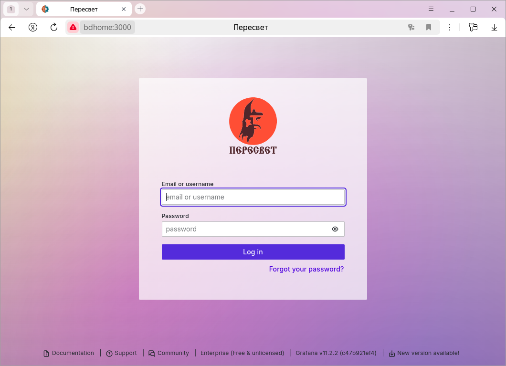
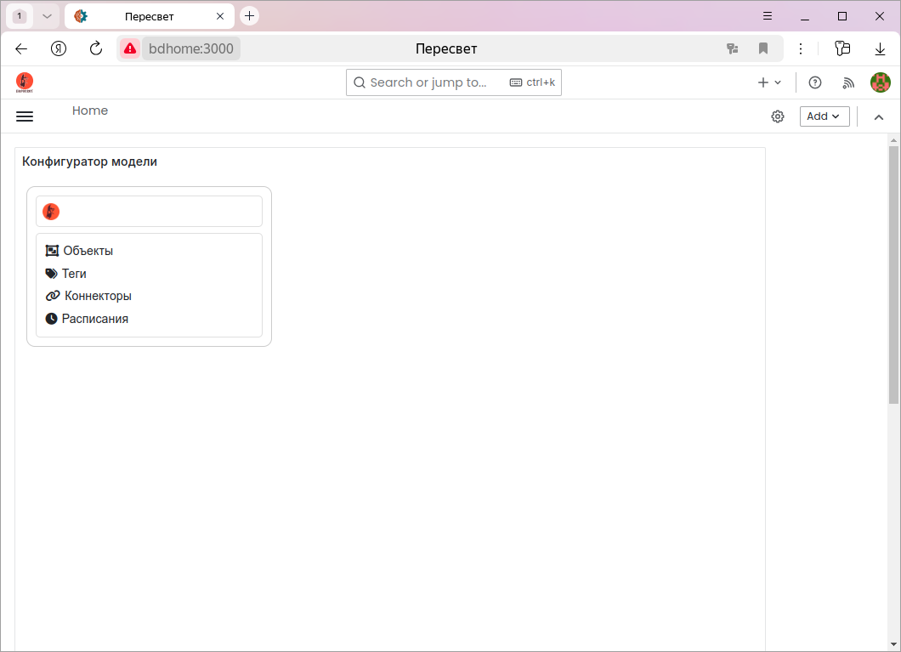
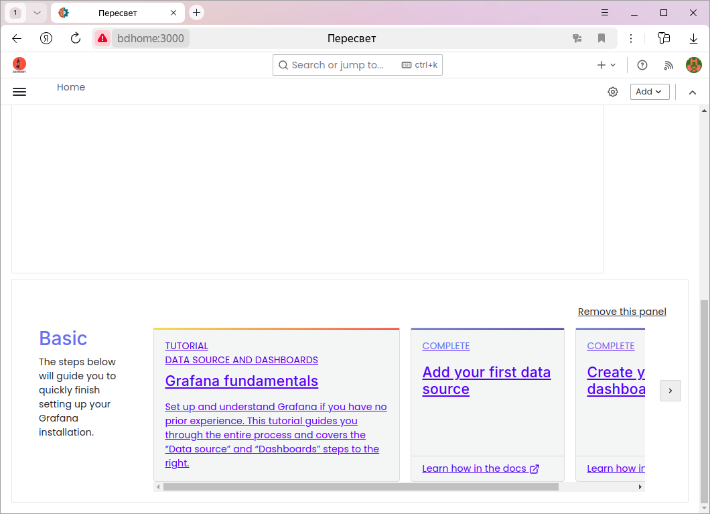
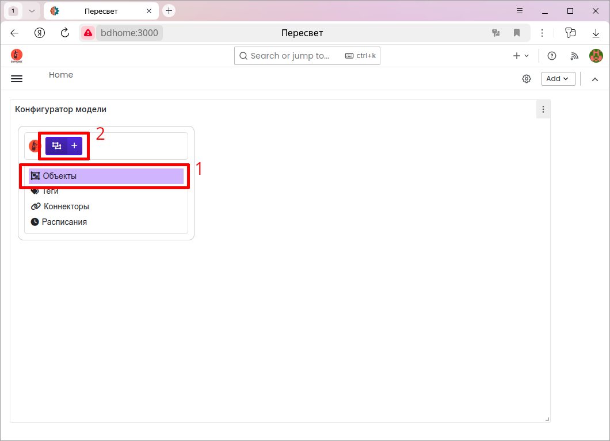
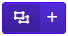
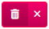
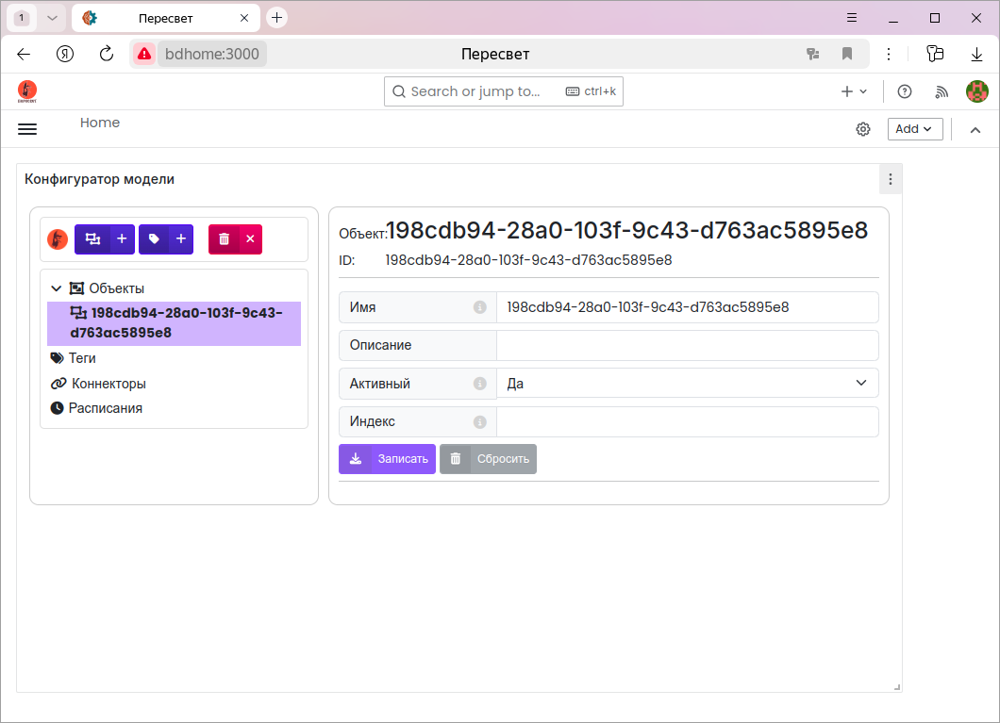
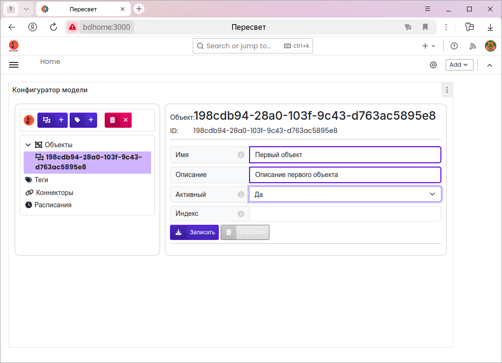
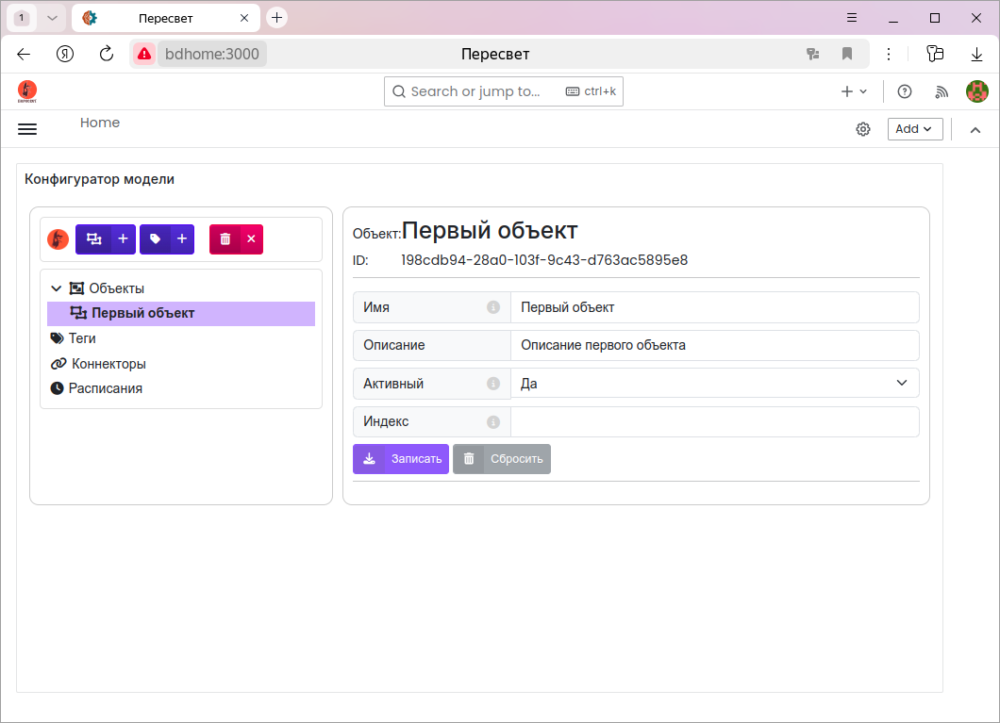

Конфигуратор модели
Примечание
Конфигуратор работает с платформой через API. Форматы всех команд создания/чтения/обновления/удаления узлов иерархии можно найти в документации по указанной ссылке.
Первый запуск
Запускаем платформу (Установка и запуск).
Запускаем браузер и в строке адреса пишем: http://localhost/grafana.
При первом запуске вводим имя пользователя admin, пароль также admin.
Grafana предложит сменить пароль.

По умолчанию открывается экран с конфигуратором.

При первом запуске в низ экрана атоматически добавляется панель, которую можно удалить:

Настройки
Кнопка с шестерёнкой стоит в одной строке с логотипом «Пересвет» и прижата к правому краю этой строки. По нажатию открывается окно настроек.
Привязка тегов и тревог к хранилищу по умолчанию при создании. Если флажок включён, новый тег или новая тревога привязываются к хранилищу, отмеченному как хранилище по умолчанию. Если флажок снят, узел создаётся без этой привязки. Значение запоминается в браузере.
Сортировка узлов по алфавиту.
Сначала узлы группируются по типу: объекты, затем теги, тревоги, методы,
коннекторы, расписания и хранилища. Пока флажок снят, внутри одного типа
узлы остаются в порядке платформы, по атрибуту prsIndex. Если флажок
включён, внутри типа конфигуратор сортирует узлы по имени. Значение
запоминается в браузере и применяется к уже раскрытым веткам.
Папки модели
Создаваемая модель объекта и информационной системы имеет иерархическую структуру.
На верхнем уровне иерархии находятся узлы, в которых создаются экземпляры соответствующих сущностей.
Проще освоить работу с конфигуратором на примерах.
Объекты
Внутри этой папки создаётся основная иерархия - модель объекта. Иерархия имеет любой уровень вложенности и может включать в себя объекты, теги, тревоги, методы.
Теги
Наиболее простой случай модели объекта - это линейный список его параметров (тегов).
В таком случае теги можно создавать, не привязывая их к какому-либо объекту.
Для этого случая служит отдельная папка Теги.
Коннекторы
В этой папке создаются описания коннекторов. Параметры, задаваемые в узле-описании коннектора, зависят от конкретного коннектора.
Расписания
Папка для создания расписаний - генераторов событий.
Хранилища данных
Папка, в которой хранятся описания хранилищ данных. Исторические данные, факты возникновения, пропадания и квитирования тревог хранятся в этих хранилищах.
Примечание
Открытая версия платформы «Пересвет» поддерживает работу только с одним хранилищем, поэтому в конфигураторе для открытой платформы отсутствует узел «Хранилища данных».
Создание новых узлов
Выбираем нужный узел, внутри которого хотим создать дочерний.
Выбираем нужную синюю кнопку и, нажав её, создаём новый экземпляр необходимой нам сущности.

После нажатия кнопки в иерархию добавится новый экземпляр выбранной сущности. Узел в иерархии, соответствующий данному экземпляру, станет текущим и справа появится панель со свойствами нового узла.
Кроме того, изменится набор кнопок в верхней части конфигуратора.
Синие кнопки показывают, экземпляры каких сущностей могут быть созданы внутри выбранного узла.
Например: внутри объекта могут быть созданы другие объекты или теги; внутри тега могут быть созданы методы и тревоги.

Новый объект
Новый тег

Красная кнопка - удаление выбранного узла из иерархии.

При создании нового узла в иерархии с помощью конфигуратора он создаётся с параметрами по умолчанию. Поэтому имя нового узла совпадает с его идентификатором.
Редактирование свойств узла
На панели справа редактируем свойства узла. При этом изменённые свойства обводятся синей рамкой.
Если у узла изменено хотя бы одно свойство, то активизируются две кнопки:
Записать - сохранение в модели изменённых свойств и
Сбросить - отмена внесённых изменений, возврат к начальным параметрам.

Нажимаем кнопку Записать:

Экспорт данных тега в CSV
На вкладке Запрос на чтение ключи start и finish принимают целое
число микросекунд или строку даты и времени. В строку можно вставить значение
из колонки Время таблицы данных и значение из соседнего поля. Кнопка
сброса очищает поле. Кнопка календаря подставляет выбранные дату и время
строкой с часовым поясом.
Для тега на вкладке Запрос на чтение выполните запрос кнопкой
Получить данные. После успешного ответа станет доступна кнопка
Сохранить в CSV. Успешным считается HTTP-ответ с кодом 2xx и
корректным JSON. Пустой список данных также можно экспортировать. Ошибка HTTP
или JSON либо новый запрос сразу очищают предыдущую таблицу и блокируют экспорт.
Имя файла по умолчанию: <имя тега> :: <текущая метка времени>.csv.
Метка времени берётся в момент сохранения и записывается в локальном часовом
поясе. Внутри файла .csv сначала идут имя тега, его id и полная строка запроса
(GET и URL). Затем идут ключи запроса и их значения. После заголовка
x,y,q записываются точки ответа. Если в запросе был ключ format,
метки времени x попадают в файл строками ISO 8601. Если ключ снят,
x записывается целым числом микросекунд, как в ответе платформы.
Кнопка относится только к последнему успешному запросу. При изменении тега или любого параметра snapshot очищается, таблица удаляется, а экспорт блокируется до следующего успешного запроса.
Полный URL и ключи запроса записываются в файл буквально. Не помещайте секреты
в query parameters. Если URL содержит userinfo или в URL/параметрах обнаружены
ключи token, api_key, apikey, password, secret,
authorization, access_token, client_secret, x-api-key или
auth без учёта регистра, конфигуратор потребует явного подтверждения перед
скачиванием.
Запись значения тега
На вкладке Запрос на запись указывается значение и, при необходимости, метка
времени. Перед отправкой значение приводится к типу тега: целое число,
вещественное число, строка или JSON. Пустая метка означает текущий момент.
Заполненная метка может быть
целым числом микросекунд или строкой даты и времени; она передаётся в
POST /v1/data/ первым элементом точки [x, y]. Кнопка календаря рядом
с полем подставляет выбранные дату и время строкой с часовым поясом.
Удаление узла
Выбираем нужный узел в иерархии и нажимаем красную кнопку. Удаление, копирование и приостановка просят подтверждение в окне с жёлтым треугольником и восклицательным знаком.
Из иерархии удаляется узел и все его потомки.
Примеры
Работу в конфигураторе с отдельными сущностями проще освоить на примерах.